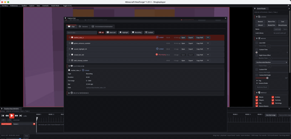

Technical wiki for creators and addon developers.
Save Last, Highlight and markers
Save recent moments, create highlights and mark important ticks during gameplay.
Free downloadAll Rights ReservedNeoForge 1.21.1

01
Save Last
Save Last uses the recent recording buffer to save a clip after the event already happened. Use it for clutch moments, bugs, roleplay beats or surprise scenes.
The Save Last 60s keybind creates a clip from the available recent window.
- Use Rolling or Hybrid if you want DVR behavior.
- Bind
Save Last 60s. - Play normally.
- Press the keybind right after the moment.
- Open Capture Hub to review, order and promote the clip.
02
Pre-roll and post-roll
Save last pre-roll seconds extends the clip start backwards. Save last post-roll seconds extends the end forwards. Use both to avoid cutting off context.
03
Highlight 30s
Highlight is a faster short-clip flow for important moments. Use the dedicated keybind when you want those clips separated from normal sessions.
04
Manual markers
- Configure up to four marker keybinds with color, custom RGB, description and optional position saving.
- Markers make timeline navigation faster.
- Drop them during live recording when you already know a moment will matter.